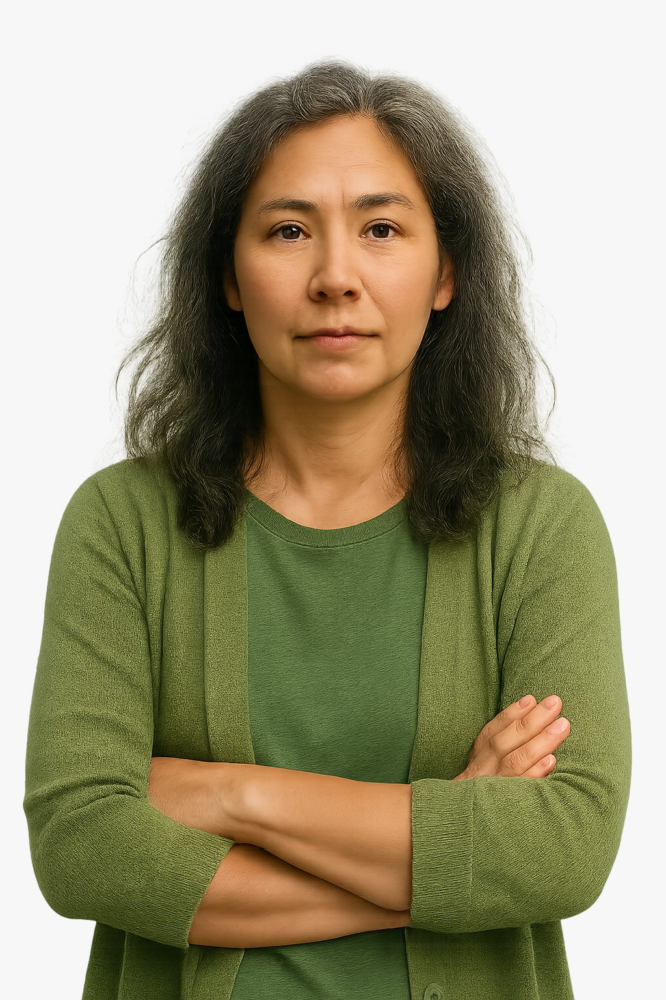
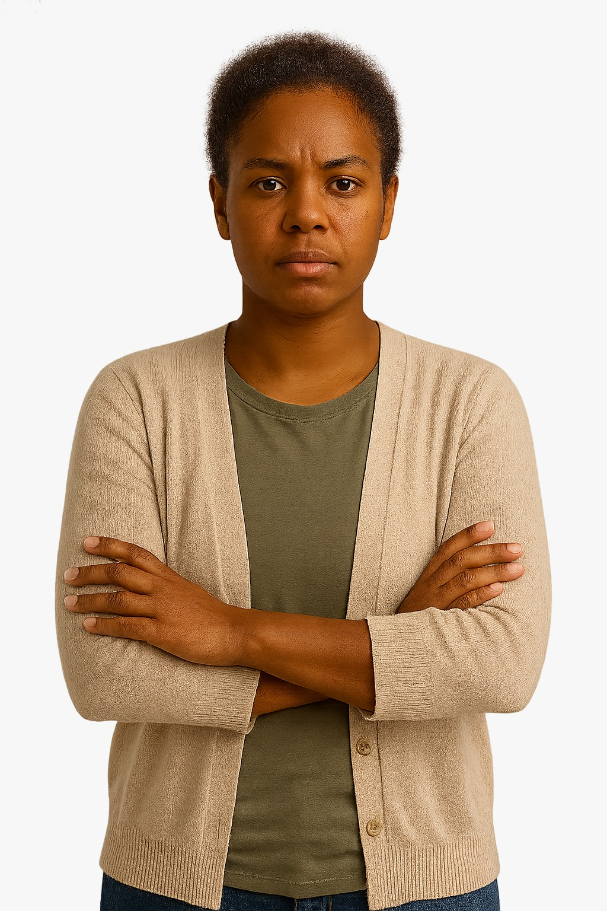

- Buscar
Promover mudanças reais exige
IGUALDADE E
JUSTIÇA DE GÊNERO.
Essa é a missão da ONU Mulheres
 
Cinco coisas que você precisa saber sobre a participação do Brasil na CSW69
CSW é a sigla em inglês da Comissão sobre o status da mulher, o principal fórum global em que os Leia mais

>Brasil ocupa a 133ª posição no ranking global de representação parlamentar de mulheres
No ano que marca o 30° aniversário da Declaração e plataforma de Ação de Pequim, o mapa Mulheres na política. Leia mais

Na casa da ONU, encontro discute projeto de Lei Modelo Interamericana para enfrentar a violência digital de gênero
Especialistas, representantes do governo e ativistas debateram propostas a partir da experiência brasileira. Mais de 40 pessoas participaram de uma Leia mais

Deputados brasileiras reafirmaram legado de Peaquim trinta anos após conferência
Benedita da Silva, Jandira Feghali e laura Carneiro refletem sobre a contribuição da Declaração e Plataforma de Açao de. Leia mais

Do cuidado familiar à política pública: conheça a história da assistente social que atua na promoção da corresponsabilidade pelo cuidado
A inquietação sobre o que via ao redor levou Sandra Valente a cursar Serviço Social. Leia mais

ONU Mulheres nomeia Edegar Pretto como Articulador Nacional da Aliança HeForShe Brasil
A ONU Mulheres nomeia nessa quarta-feira(28) o presidente da Companhia Nacional de Abastecimento(Conab). Leia mais

O poder das comunidades - Dia Internacional contra a Homofobia, Bifobia e Transfobia em 2025
Neste Dia Internacional contra a Homofobia, Bifobia e Transfobia (17 de maio de 2025), a ONU Mulheres se une. Leia mais

Em encontro do BRICS, ONU Mulheres destaca financiamento com perspectiva de gênero para ação climática
A representante interina de ONU Mulheres no Brasil, Ana Carolina Querino, participou Leia Mais


Acompanhe a ONU Mulheres nas redes sociais